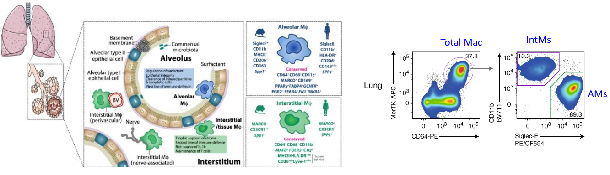
5 Innate Immunity in Health and Diseases
Tissue-resident macrophages in the lungs encompass two primary categories: alveolar macrophages (AMs) and interstitial macrophages (IntMs), each with distinct localization and phenotypic characteristics.
Alveolar macrophages are predominantly situated within the airways and alveoli of the lungs. They are characterized by the expression of specific surface markers, including CD11c, Siglec F, CD169, and lack expression of CD11b.
On the other hand, interstitial macrophages are found within the tissue interstitium and parenchyma of the lungs. Unlike alveolar macrophages, interstitial macrophages typically express CD11b and Siglec F markers.
5.1 Functions of Macrophages in Lungs
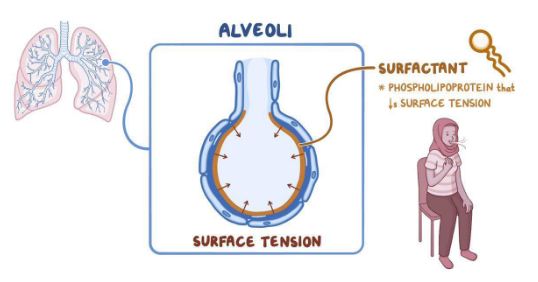
Tissue-resident macrophages in the lungs play crucial roles in maintaining pulmonary homeostasis and supporting respiratory function, particularly concerning the regulation of pulmonary surfactant (PS).
Pulmonary surfactant is primarily composed of lipids, including phosphatidylcholine, phosphatidylglycerol, and surfactant proteins A-D. The main function of pulmonary surfactant is to reduce the surface tension of the alveoli during respiration. By lowering surface tension, pulmonary surfactant prevents lung collapse by decreasing the pressure required to inflate the lungs during inhalation.
Tissue-resident macrophages contribute to the regulation of pulmonary surfactant by participating in the clearance and recycling of surfactant components. They help maintain an appropriate size and composition of the surfactant pool within the alveoli, ensuring optimal lung function and gas exchange.
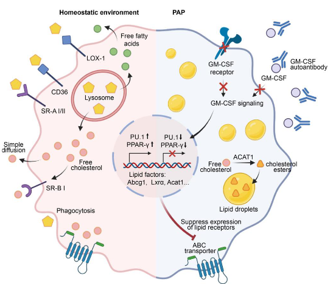
Alveolar macrophages (AMs) play a crucial role in maintaining the balance of surfactant, a vital component for healthy lung function. In individuals without respiratory issues, approximately 30% of surfactant is managed by AMs through a series of intricate processes.
AMs are adept at uptaking lipids, a primary component of surfactant, utilizing mechanisms such as phagocytosis, micropinocytosis, and scavenger receptors. Once engulfed, lipids undergo degradation within lysosomes, where they are broken down into free cholesterol and fatty acids.
The presence of intracellular cholesterol acts as a signal, activating transcription factors known as liver X receptors α and β (LXR α/β). These transcription factors play a pivotal role in regulating gene expression associated with lipid metabolism. In particular, they promote the transcription and expression of lipid transporters, facilitating the efflux of free cholesterol from AMs.
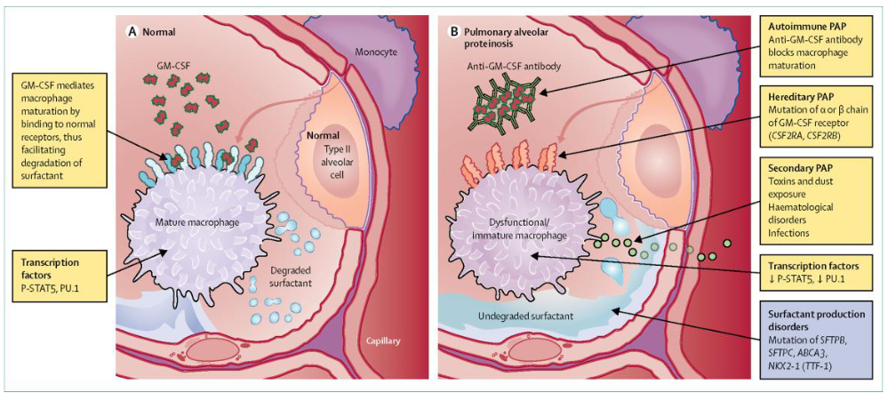
Tissue-resident macrophages in the lungs, particularly alveolar macrophages (AMs), serve critical functions in maintaining pulmonary health. One key role of AMs is the clearance of surfactant, a substance vital for proper lung function. Surfactant helps reduce surface tension within the alveoli, preventing lung collapse during breathing.
In cases where AMs are absent or not functioning correctly, a condition known as pulmonary alveolar proteinosis (PAP) can occur. PAP is characterized by the accumulation of surfactant in the alveoli due to defective clearance mechanisms. This accumulation leads to inflammation and respiratory distress, compromising lung function.
5.1.1 Efferocytosis
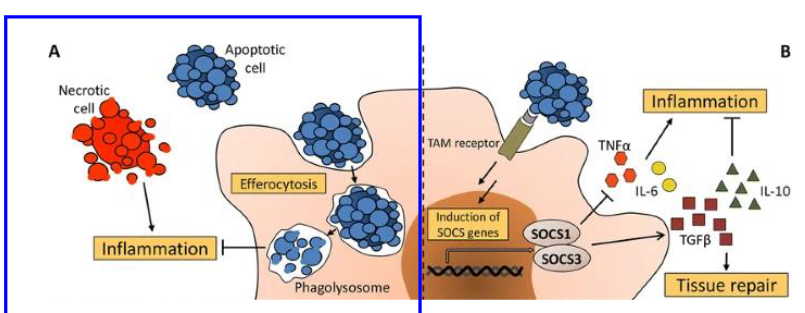
Tissue-resident macrophages in the lungs play a crucial role in a process called efferocytosis, which involves the engulfment of apoptotic cells by phagocytes. Apoptosis, or programmed cell death, is a natural process that helps maintain tissue homeostasis by removing unwanted or damaged cells. Timely removal of apoptotic cells is essential to prevent autoimmune reactions against cellular components.
When apoptotic cells are not promptly engulfed, they undergo secondary necrosis, releasing cellular debris. This debris contains molecules known as ‘damage-associated molecular patterns’ (DAMPs), which can trigger uncontrolled inflammatory responses by activating the innate immune system. Therefore, efficient efferocytosis by macrophages helps prevent the release of DAMPs and subsequent inflammatory activation.
Importantly, the process of engulfing apoptotic cells is different from typical phagocytosis of foreign pathogens. While phagocytosis often initiates an inflammatory response to combat invading microbes, efferocytosis of apoptotic cells is a tolerogenic process.
5.1.1.1 Mechanisms of Efferocytosis
Efferocytosis, the process by which phagocytes engulf apoptotic cells, involves several mechanisms that contribute to its anti-inflammatory nature. Apoptotic cells release “eat-me” signals on their surface, indicating to phagocytes that they are ready to be cleared. One such signal is phosphatidylserine (PtdSer), which is typically found on the inner leaflet of the plasma membrane in living cells but becomes externalized during apoptosis.
Phagocytes possess receptors that specifically recognize externalized PtdSer, such as TREM2, CD300, RAGE, and TAM receptors. Binding of these receptors to PtdSer triggers intracellular signaling pathways that lead to cytoskeletal rearrangements, allowing the phagocyte to engulf the apoptotic cell.
One key aspect of efferocytosis is its anti-inflammatory nature. Engulfment of apoptotic cells promotes the secretion of anti-inflammatory cytokines like transforming growth factor-beta (TGF-β) and interleukin-10 (IL-10). These cytokines help dampen the immune response and promote tissue repair. Additionally, efferocytosis inhibits the secretion of pro-inflammatory mediators such as tumor necrosis factor-alpha (TNF-α), interleukin-1 (IL-1), and interleukin-8 (IL-8), further contributing to the resolution of inflammation.
5.1.2 First Line of Defense
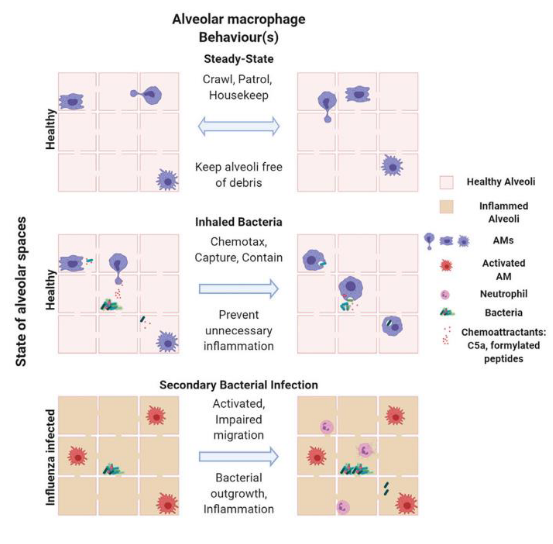
Tissue-resident macrophages in the lungs, particularly alveolar macrophages (AMs), play crucial roles in defending against bacterial infections through phagocytosis. AMs are highly mobile cells that traverse between alveoli, actively scavenging inhaled bacteria. In situations where the bacterial load is low, AMs swiftly capture the bacteria, preventing the recruitment of neutrophils and maintaining a state of subdued immune response in the lungs. This mechanism helps prevent continuous inflammation in the delicate lung tissue, promoting a “silenced” immune state.
However, during co-infection with viruses like influenza A virus, the functionality of AMs can be compromised due to signaling pathways activated by type II interferons. This impairment in AM crawling leads to an increased bacterial load in the lungs. As a result, neutrophils are recruited to the site of infection to assist in pathogen clearance, leading to lung inflammation.
5.1.3 Lung Immune Responses
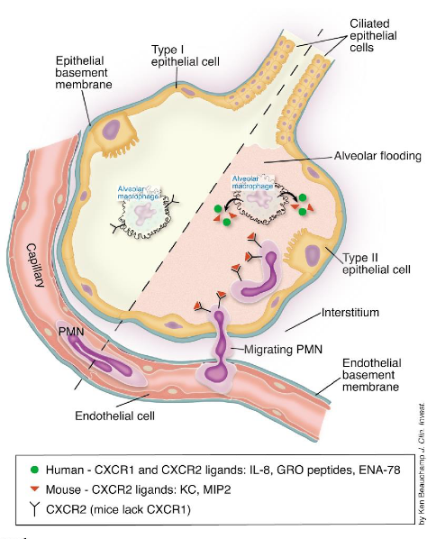
Neutrophils play a pivotal role in lung immune responses, acting as the predominant leukocyte population in human circulation. In the lung’s steady state, a population of neutrophils is maintained within the pulmonary vasculature and perivascular space. Their retention in the lung is facilitated by the upregulation of the chemokine receptor CXCR4, which binds to CXCL12, a ligand expressed by a subset of lung endothelial cells.
During infection or inflammation, the immune system requires a substantial influx of neutrophils to the affected site. This recruitment is initiated by the detection of pathogen-associated molecular patterns (PAMPs) and damage-associated molecular patterns (DAMPs), which stimulate the production of pro-inflammatory mediators and neutrophil chemoattractants such as CXCL1, CXCL2, CXCL5, fMLP, and LTB4.
Neutrophils then undergo transmigration from the bloodstream to the affected tissue through a process known as the leukocyte adhesion cascade. This cascade involves a series of sequential interactions between neutrophils and endothelial cells, mediated by adhesion molecules and chemokines, ultimately allowing neutrophils to migrate across the endothelium and reach the site of infection or inflammation.
5.1.4 As a Double-Edged Sword?
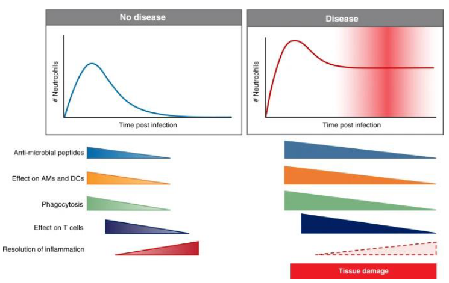
Neutrophils, while crucial for combating infections as part of the innate immune system, can also pose a double-edged sword during infection due to their highly inflammatory actions. Their robust response, while aimed at eliminating pathogens, can inadvertently lead to immunopathology and tissue damage. This phenomenon highlights the delicate balance required in regulating neutrophil activity to resolve inflammation and limit tissue damage.
In instances where neutrophil activation is excessive or prolonged, the inflammatory response they elicit can result in collateral damage to surrounding tissues. This immunopathology can exacerbate tissue injury and contribute to the severity of the infection. Therefore, tight regulation of neutrophil function is essential to prevent unchecked inflammation and maintain tissue integrity.
5.1.5 Neutrophils During COVID-19
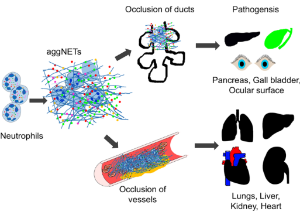
Neutrophils play a complex role in COVID-19, the disease caused by the novel coronavirus. One of their crucial functions is the release of neutrophil extracellular traps (NETs), which are web-like structures composed of DNA, histones, and antimicrobial proteins. These NETs serve to capture and immobilize pathogens, including viruses like SARS-CoV-2.
However, in the context of COVID-19, the release of NETs can lead to unintended consequences. NETs contain various proinflammatory mediators and pro-thrombotic factors, which can contribute to tissue injury, exaggerated inflammation, and thrombosis, all of which are hallmarks of severe COVID-19 disease. Excessive production of NETs can also act as direct inflammation amplifiers, contributing to the phenomenon known as cytokine storm, which is associated with severe cases of COVID-19.
Studies have shown elevated levels of NETs in the blood and lungs of patients with severe COVID-19, suggesting their involvement in the pathogenesis of the disease. Interestingly, treatment with DNase I, an enzyme that degrades NETs, has shown promising results in preclinical studies using mouse models of COVID-19. Administration of DNase I was associated with improved clinical outcomes, highlighting the potential therapeutic value of targeting NETs in COVID-19 management.
5.1.5.1 Trained Immunity During COVID-19
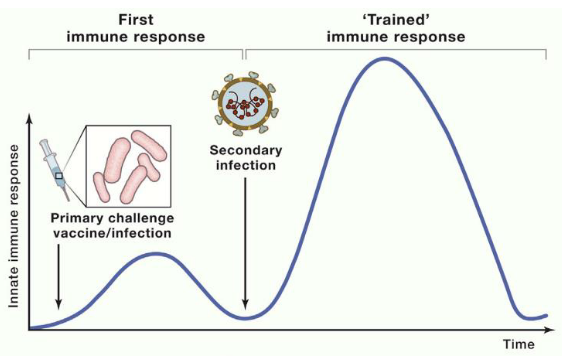
Trained immunity holds potential as a strategy to reduce susceptibility to and severity of SARS-CoV-2 infection, the virus responsible for COVID-19. This concept involves the enhanced response of the innate immune system following an initial encounter with pathogens, whether through vaccination or infection. The key mechanism behind trained immunity lies in the epigenetic reprogramming of innate immune cells.
Epigenetic reprogramming involves sustained changes in the expression of genes related to the immune response, without altering the underlying DNA sequence. This reprogramming enables quicker accessibility of transcription factors to the promoter and enhancer regions of pro-inflammatory genes upon subsequent encounters with the pathogen. As a result, there is a more rapid and robust immune response upon reinfection.
For SARS-CoV-2, inducing trained immunity could mean that individuals who have been exposed to the virus or vaccinated against it may mount a more effective innate immune response upon re-exposure. This heightened response could potentially reduce the severity of illness and lower the risk of reinfection. However, the specific mechanisms by which trained immunity influences the immune response to SARS-CoV-2 require further research.
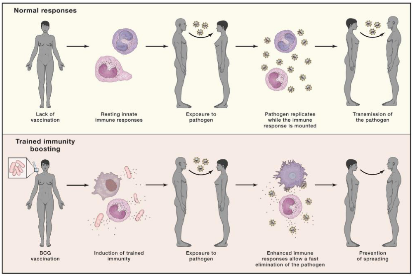
In 2020, amidst the absence of a specific vaccine against SARS-CoV-2, researchers explored the potential of vaccines that induce trained immunity as a means to protect against COVID-19. One such vaccine that garnered attention was the Bacille Calmette-Guérin (BCG) vaccine, which has historically demonstrated broad heterologous protection against various infections.
The hypothesis surrounding BCG vaccination and its potential effectiveness against COVID-19 centered on the concept of trained immunity. The idea was that BCG vaccination could induce a robust innate immune response, characterized by the enhanced production of anti-viral cytokines such as interleukin-1 beta (IL-1β), tumor necrosis factor (TNF), and interferons (IFNs), in response to SARS-CoV-2 challenge.
The proposed mechanism suggested that individuals who received the BCG vaccine might exhibit decreased viremia, faster viral elimination, fewer symptoms, and quicker recovery upon exposure to SARS-CoV-2. By priming the innate immune system through trained immunity, BCG vaccination aimed to provide a level of protection against COVID-19, particularly in populations where the vaccine was already administered as part of routine immunization programs.
5.1.5.1.1 More on Trained Immunity as a Vaccine
After conducting experimental, epidemiological, and clinical studies over the past three years, researchers have gleaned valuable insights into the potential of trained immunity-inducing vaccines in the context of COVID-19 and future pandemics.
The findings from these studies indicate that while most investigations in healthy individuals did not reveal significant overall protection against total COVID-19 infections, certain smaller studies conducted in vulnerable groups showed some protective effects. Although a decrease in disease severity was suggested, formal demonstration of its induction by trained immunity-inducing vaccines remains pending.
Despite the limitations observed, these studies serve as a proof-of-principle for the potential deployment of trained immunity-inducing vaccines against novel pathogens in the future. They propose the concept of “bridge vaccination” as a strategic tool to mitigate healthcare and economic consequences at the onset of a pandemic until specific vaccines can be developed and rigorously tested.
However, the existing trained immunity-inducing vaccines, such as the BCG vaccine, have shown variable efficacy, with only around 50% of individuals exhibiting robust responses after vaccination. Therefore, there is a pressing need to intensify efforts toward developing more effective trained immunity-inducing vaccines as a critical component of pandemic preparedness for the future.
5.2 Gut Innate Immune System
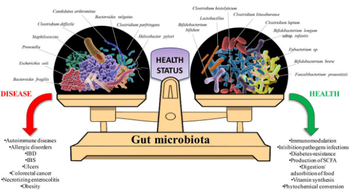
The gut microbiota, comprising a vast array of microorganisms, represents the largest and most diverse microbial community within the human body. This microbiota varies naturally among individuals and is influenced by numerous factors including diet, lifestyle, and birth method. Despite this variation, there exists a symbiotic relationship between these commensal microbes and the host.
One of the key roles of the gut microbiota is its involvement in promoting the development of the host’s immune system and fine-tuning immune responses. Through the provision of secondary metabolites, foreign molecular patterns, and antigens, the microbiome plays a crucial role in shaping the host’s immune landscape.
However, it’s essential for the host to tightly regulate microbial sensing at the mucosal surface. This delicate balance ensures that the host can mount a rapid defensive immune response against invading pathogens while maintaining tolerance towards commensal microbes. Disruption of this balance can lead to dysregulation of the immune system and contribute to various inflammatory and autoimmune conditions.
5.2.1 Commensal Microbes
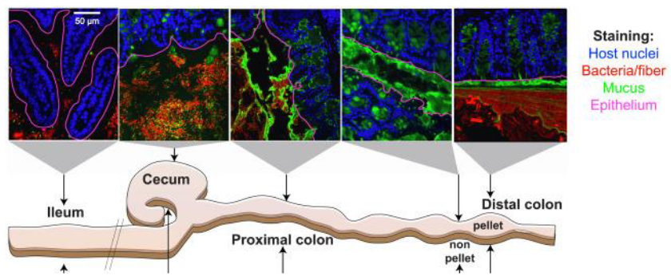
The gut harbors trillions of microbes, yet the risk of inflammation is mitigated by robust immunological and physical barriers that restrict bacterial colonization of the intestinal mucosa. Among these barriers, the gastrointestinal gel-forming mucin MUC2 stands out as a pivotal player.
MUC2 polymerizes to create a mesh-like microbial sieve, which is organized into two distinct layers within the intestinal epithelium. The inner dense layer forms a bacteria-free zone that prevents microbial penetration. This inner layer is particularly enriched in innate and adaptive immune effectors that target the microbiota, helping to regulate their presence and activity.
In contrast, the outer loose layer of MUC2 serves as a habitat and scaffold for bacterial attachment and nourishment. Here, commensal microbes find a conducive environment for colonization while remaining separated from the host’s immune defenses in the inner layer.
5.2.2 Immune Modulation by Metabolites
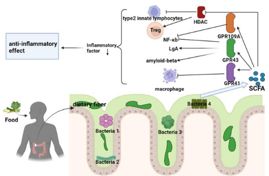
Metabolites generated by the gut microbiota play a crucial role in modulating the immune system, particularly through the production of short-chain fatty acids (SCFAs). SCFAs are metabolic byproducts produced during the bacterial fermentation of complex carbohydrates that escape digestion.
One key function of SCFAs is their ability to inhibit histone deacetylases (HDACs), enzymes involved in gene regulation. By inhibiting HDACs, SCFAs promote a tolerogenic and anti-inflammatory cell phenotype, which is essential for maintaining immune homeostasis. This highlights the microbiota’s role as an epigenetic regulator of host physiology.
Exposure of immune cells, such as neutrophils and macrophages, to SCFAs leads to downregulation of pro-inflammatory mediators like tumor necrosis factor (TNF), nitric oxide, and interleukins (IL-6 and IL-12). Particularly, n-butyrate, a type of SCFA, helps maintain intestinal tolerance to the microbiota by dampening the production of pro-inflammatory molecules induced by bacterial components like lipopolysaccharides (LPS).
SCFAs also act as ligands for G protein-coupled receptors (GPCRs), such as GPR109A. Activation of GPR109A by SCFAs promotes the anti-inflammatory properties of macrophages and dendritic cells (DCs), enabling them to induce the differentiation of regulatory T cells (Tregs). This mechanism serves to protect against colonic inflammation and diseases like colon cancer.Metabolites generated by the gut microbiota play a crucial role in modulating the immune system, particularly through the production of short-chain fatty acids (SCFAs). SCFAs are metabolic byproducts produced during the bacterial fermentation of complex carbohydrates that escape digestion.
One key function of SCFAs is their ability to inhibit histone deacetylases (HDACs), enzymes involved in gene regulation. By inhibiting HDACs, SCFAs promote a tolerogenic and anti-inflammatory cell phenotype, which is essential for maintaining immune homeostasis. This highlights the microbiota’s role as an epigenetic regulator of host physiology.
Exposure of immune cells, such as neutrophils and macrophages, to SCFAs leads to downregulation of pro-inflammatory mediators like tumor necrosis factor (TNF), nitric oxide, and interleukins (IL-6 and IL-12). Particularly, n-butyrate, a type of SCFA, helps maintain intestinal tolerance to the microbiota by dampening the production of pro-inflammatory molecules induced by bacterial components like lipopolysaccharides (LPS).
SCFAs also act as ligands for G protein-coupled receptors (GPCRs), such as GPR109A. Activation of GPR109A by SCFAs promotes the anti-inflammatory properties of macrophages and dendritic cells (DCs), enabling them to induce the differentiation of regulatory T cells (Tregs). This mechanism serves to protect against colonic inflammation and diseases like colon cancer.
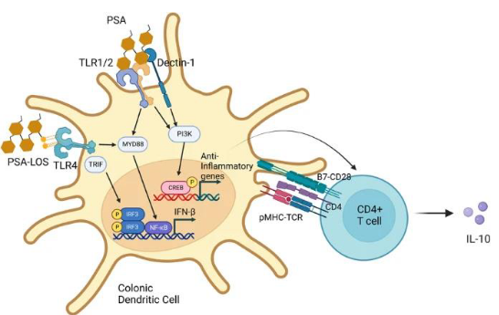
Microbial products play a pivotal role in maintaining the delicate balance of host-microbe interactions and influencing immune responses. One such example is Polysaccharide A (PSA), derived from the surface of the gut commensal organism Bacteroides fragilis. PSA functions by signaling through Toll-like receptor 1/2 (TLR1/2) heterodimers, along with Dectin-1, initiating the phosphoinositide 3-kinase (PI3K) pathway. This signaling cascade leads to the expression of anti-inflammatory genes like interleukin-10 (IL-10) through CREB-dependent mechanisms. Studies have demonstrated that PSA exhibits protective effects against colitis in mouse models, highlighting its role in dampening inflammatory responses.
Another microbial product, Lipooligosaccharides (LOS), is found in the outer membrane of Bacteroides species. LOS molecules signal through Toll-like receptor 4 (TLR4) present on dendritic cells (DCs), triggering the secretion of interferon-beta (IFNβ). This response contributes to the regulation of immune reactions and the initiation of appropriate immune responses against pathogens or microbial challenges.
5.3 Obesity
The structure and function of the gut microbiome are highly influenced by environmental factors, particularly diet. Individuals with metabolic diseases such as obesity and diabetes often exhibit alterations in their gut microbiota composition. These alterations include reduced microbial diversity or richness and decreased production of beneficial compounds like butyrate. Additionally, there may be enhancements in functions such as mucus degradation, which can contribute to metabolic dysregulation.
Studies using fecal microbiota transplantation (FMT) have provided further insights into the relationship between gut microbiota and metabolic health. For instance, when feces from obese mice were transplanted into lean germ-free recipient mice, there was a significant increase in weight observed in the recipient mice. Conversely, transplanting feces from lean mice into obese animals induced weight loss without affecting their food intake.
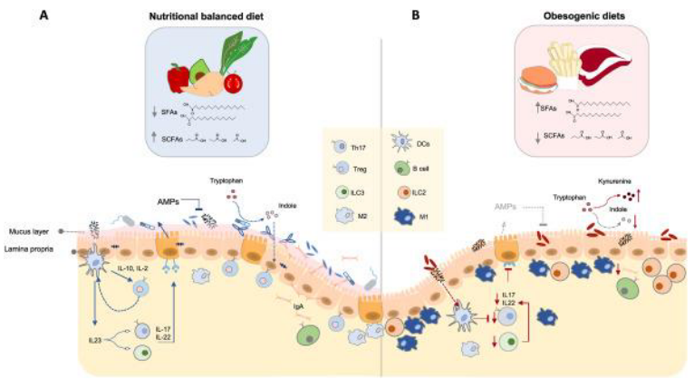
5.4 Inflammatory Bowel Disease (i.e., IBD)
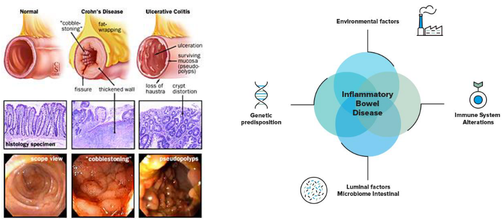
Inflammatory bowel disease (IBD) encompasses two primary conditions: Crohn’s disease and ulcerative colitis. Both are characterized by chronic and recurrent inflammation within the gastrointestinal tract. The etiology of IBD involves a complex interplay of factors, including the host immune system, genetic predisposition, environmental influences, and alterations in the gut microbiota.
Crohn’s disease and ulcerative colitis share similar symptoms, including abdominal pain, diarrhea, rectal bleeding, fatigue, and weight loss. However, they differ in the specific regions of the digestive tract that they affect and the nature of the inflammation. Crohn’s disease can impact any part of the digestive tract, from the mouth to the anus, and is characterized by transmural inflammation, which affects the entire thickness of the intestinal wall. In contrast, ulcerative colitis primarily affects the colon and rectum, with inflammation limited to the innermost lining of the colon.
The exact cause of IBD remains unclear, but it is believed to result from a combination of genetic susceptibility and environmental factors. Genetic variations can predispose individuals to abnormal immune responses in the gut, leading to inflammation. Environmental factors such as diet, lifestyle, stress, and exposure to certain medications or infections can also contribute to the development and exacerbation of IBD. Westernization of diet, characterized by excess consumption of sugar, fat, and processed foods, has been associated with an increased incidence of IBD.
Furthermore, alterations in the composition and function of the gut microbiota have emerged as critical factors in the pathogenesis of IBD. Dysbiosis, or an imbalance in the gut microbial community, is commonly observed in individuals with IBD. Changes in the gut microbiota composition can disrupt immune homeostasis and promote inflammation within the intestinal mucosa.
5.4.1 Neutrophils During IBD
In the context of inflammatory bowel disease (IBD), neutrophils play a crucial role in both maintaining gut homeostasis and contributing to disease pathology. During periods of gut homeostasis, when the intestinal barrier remains intact, neutrophils serve as frontline defenders against invading microorganisms. Upon sensing breaches in the intestinal barrier, neutrophils are swiftly recruited from the bloodstream to the site of injury or infection.
In response to tissue damage or microbial invasion, neutrophils employ various mechanisms to eliminate pathogens and promote tissue repair. These mechanisms include phagocytosis, degranulation (the release of antimicrobial peptides and enzymes stored in granules), the generation of reactive oxygen species (ROS), and the formation of neutrophil extracellular traps (NETs). NETs are web-like structures composed of DNA, histones, and antimicrobial proteins that ensnare and neutralize pathogens, thereby impeding their spread.
In situations of gut injury or inflammation associated with IBD, the recruitment and activation of neutrophils are amplified. While this heightened neutrophil response aims to contain microbial threats and promote tissue healing, excessive neutrophil activity can exacerbate mucosal damage and inflammation. Neutrophils release proteases such as matrix metalloproteinases (MMPs) and neutrophil elastase, which can degrade extracellular matrix components and contribute to tissue destruction. Moreover, the release of ROS by activated neutrophils can further compromise the integrity of the intestinal epithelium.
5.4.2 Macrophages During IBD
In the context of inflammatory bowel disease (IBD), macrophages serve as key regulators of immune responses within the gut microenvironment. During steady-state conditions, macrophages are distributed throughout the gut and exhibit an anti-inflammatory phenotype aimed at maintaining immune homeostasis. These tissue-resident macrophages secrete anti-inflammatory cytokines such as interleukin-10 (IL-10), which promotes the expansion of regulatory T cells (Tregs). By favoring the expansion of Tregs, macrophages help prevent excessive inflammation in response to harmless commensal organisms present in the gut.
In addition to their role in immune regulation, macrophages play a critical role in maintaining epithelial barrier integrity by phagocytosing and clearing apoptotic cells. Furthermore, a subset of macrophages expressing high levels of the chemokine receptor CX3CR1 capture soluble food antigens and transfer them to dendritic cells (DCs) expressing CD103. This process promotes antigen presentation, the differentiation of Tregs, and the induction of food tolerance, thereby preventing inappropriate immune responses to dietary antigens.
However, during IBD, the balance of macrophage function is disrupted. Elevated numbers of macrophages, primarily derived from newly recruited monocytes, accumulate in the inflamed colon. These monocyte-derived macrophages contribute to the pathogenesis of IBD by producing increased levels of pro-inflammatory mediators such as tumor necrosis factor-alpha (TNFα), interleukin-1 beta (IL-1β), interleukin-6 (IL-6), and inducible nitric oxide synthase (iNOS). The dysregulated production of these inflammatory mediators perpetuates chronic inflammation and tissue damage characteristic of IBD.
In the therapeutic management of IBD, anti-inflammatory biologics targeting specific cytokines, such as anti-TNFα agents, are often employed to mitigate inflammation and alleviate symptoms.
5.5 Skin Immune System
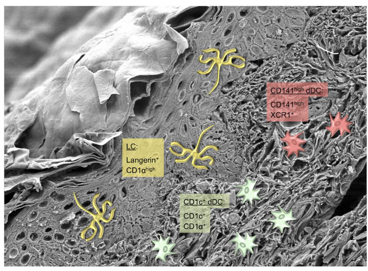
The skin serves as a crucial barrier between our bodies and the external environment, making it the second largest barrier organ after the intestine. It is constantly exposed to various stressors such as physical trauma, environmental antigens, commensal bacteria, and pathogens. To effectively protect against external threats while maintaining tolerance to harmless stimuli, the skin’s immune system must be able to detect and differentiate between these diverse antigens, triggering appropriate immune responses tailored to the specific threat.
A fundamental component of the skin’s immune defense is its diverse population of dendritic cells. Dendritic cells act as central orchestrators of both innate and adaptive immune responses within the skin. These specialized immune cells are strategically positioned throughout the skin layers, where they continuously survey their surroundings for signs of danger. Upon encountering pathogens, allergens, or other foreign substances, dendritic cells capture antigens and migrate to nearby lymph nodes, where they present these antigens to T cells, initiating adaptive immune responses.
In addition to dendritic cells, the skin’s immune system comprises various other immune cells, including macrophages, T cells, B cells, and innate lymphoid cells, each playing distinct roles in skin immunity. Macrophages, for example, contribute to tissue repair and inflammation resolution, while T cells and B cells mediate adaptive immune responses by recognizing and targeting specific antigens.
Crucially, the skin immune system must strike a delicate balance between protective immunity and tolerance to self-antigens and harmless environmental factors. Dysregulation of skin immune responses can lead to chronic inflammatory conditions such as psoriasis, eczema, and autoimmune diseases.
5.5.1 Langerhan Cells
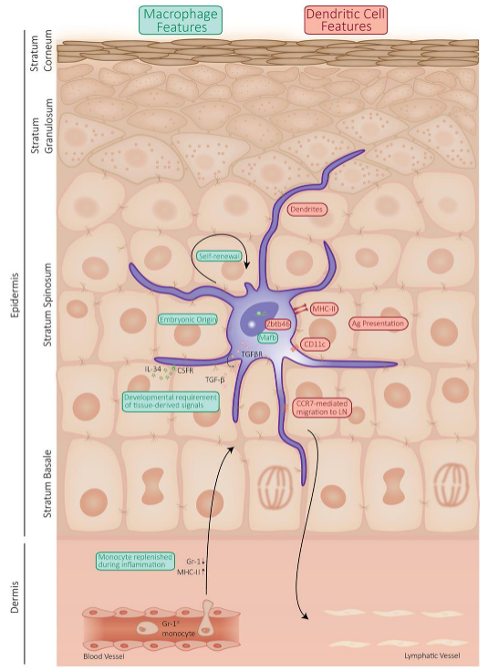
Langerhans cells, constituting about 3-5% of all nucleated cells in the epidermis, are vital components of the skin’s immune defense system. As professional antigen-presenting cells, they play a pivotal role in surveilling the epidermis for potential threats. Langerhans cells extend their dendrites into the skin’s outermost layer to capture antigens present on the skin’s surface, ranging from pathogens to environmental allergens.
These unique cells exhibit characteristics of both dendritic cells (DCs) and macrophages. They originate from macrophage precursors during embryonic development and acquire dendritic cell properties as they migrate to and settle in the epidermis. Despite their macrophage-like features, Langerhans cells actively participate in antigen presentation, a hallmark function of dendritic cells.
Langerhans cells demonstrate a remarkable ability to maintain their population locally through self-renewal, stemming from their embryonic origin. In homeostatic conditions, they undergo slow proliferation to replace dying or emigrating cells, ensuring a steady presence in the epidermis. Moreover, these cells possess the capacity to take up and process foreign antigens both during steady-state conditions and in response to inflammation.
Following antigen capture, Langerhans cells migrate to the skin-draining lymph nodes, where they present the processed antigens to adaptive immune cells such as T cells and B cells. This antigen presentation is a crucial step in initiating adaptive immune responses tailored to combat specific threats encountered by the skin.
5.5.1.1 Migration
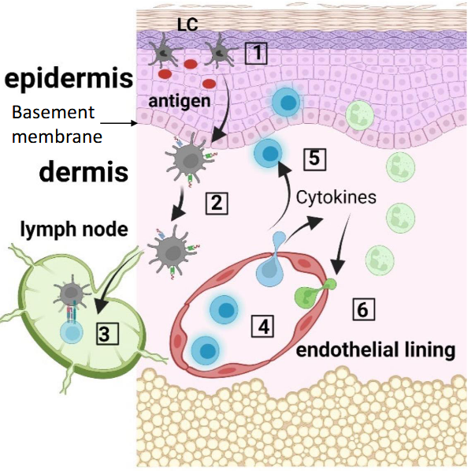
The migration of Langerhans cells (LCs) is a complex and highly regulated process that involves multiple steps to ensure their efficient movement from the skin to the lymph nodes:
Downregulation of E-cadherin: LCs initially need to disengage from the surrounding keratinocytes in the epidermis. This is facilitated by the downregulation of E-cadherin, a cell adhesion molecule, which helps LCs detach from neighboring cells.
Migration to the dermis: Once disengaged, LCs migrate from the epidermis to the dermis. This migration is orchestrated by the interaction between the chemokine receptor CXCR4 on LCs and its ligand CXCL12, which is expressed in the dermis. This interaction guides LCs towards the dermis.
Crossing the basement membrane: LCs need to traverse the basement membrane, a specialized extracellular matrix structure that separates the epidermis from the dermis. To accomplish this, LCs locally secrete enzymes called matrix metalloproteinases, which degrade the basement membrane, allowing LCs to cross it and enter the dermis.
Upregulation of CCR7 expression: Upon reaching the dermis, LCs upregulate the expression of CCR7, another chemokine receptor. This receptor interacts with its ligand CCL21, which is expressed in lymphatic vessels and lymph nodes. The interaction between CCR7 and CCL21 guides LCs into the lymphatic vessels.
Migration to regional lymph nodes: Once in the lymphatic vessels, LCs travel to the regional lymph nodes, where they present antigens to T cells and initiate adaptive immune responses. Actomyosin contraction, which involves the contraction of a network of proteins within the cell, is crucial for the migration of LCs through the lymphatic vessels.
5.5.1.2 In Cutaneous Health?
During normal conditions, LCs continuously patrol the skin’s surface, maintaining immune surveillance and promoting tolerance to self-antigens by presenting them to immune cells in the lymph nodes.
However, in the presence of pathogens or inflammatory signals, LCs undergo activation, triggering a cascade of immune responses aimed at neutralizing the threat and restoring tissue homeostasis. Upon activation, LCs secrete pro-inflammatory cytokines and increase their migratory capacity, relocating to regional lymph nodes to orchestrate adaptive immune responses and coordinate the clearance of pathogens.
In instances of cutaneous inflammation, infection, or injury, LCs respond dynamically by migrating from the epidermis to lymphoid tissues, creating an immune-rich environment to combat the threat.